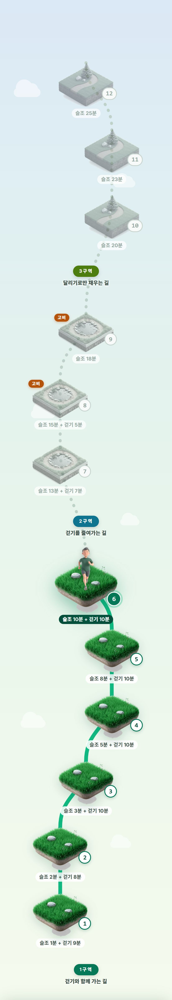
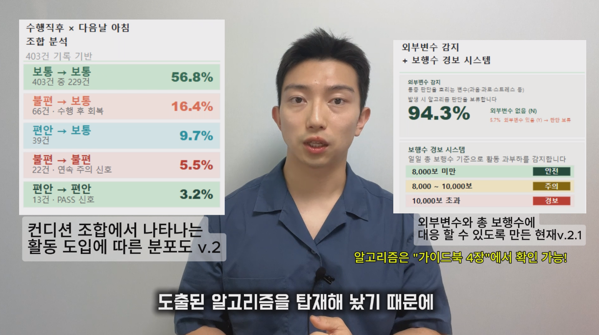
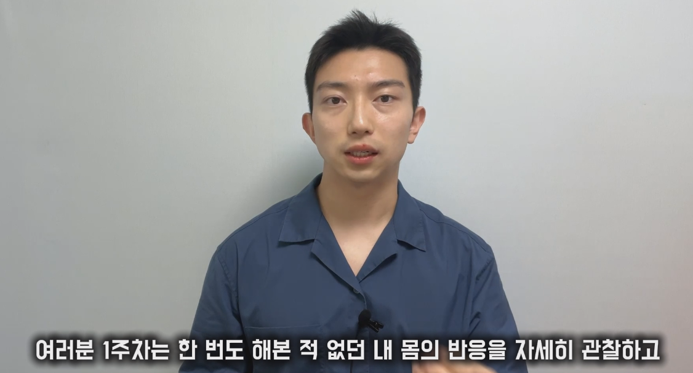

허리 때문에 포기한 게 하나둘이 아닙니다. 그런데 남들 눈엔 멀쩡해 보여서 설명하기도 지쳤습니다.
“평생 관리하면서 사셔야 합니다.”
병원에서 3분 만에 듣고 나온 말. 그 뒤로 아무도 그 다음 얘기를 안 해줍니다.그래서 결국 참는 게 전부인 하루가 반복됩니다.
내년 이맘때도 양말 하나 신기 버겁고,
일상은 계속 스트레스로 가득 찹니다.
실제로 한 참여자는 저희를 만나기 전 이렇게 적었습니다.
“휴일이 싫어진다. 벌써 일 년 반을, 모임에도 민폐가 되는 느낌이다.”
오늘 뭘 얼마나 하면 되는지 알려드리고, 막히면 같이 풉니다. 그러면 포기했던 것들이 하나씩 돌아옵니다.
저림이 가장 심해 쉬기만 했던 분이,
한 달 만에 통증 6에서 1로, 30분을 뜁니다.
앱에 남긴 기록 원문 그대로입니다. 개인 보호를 위해 이름은 표기하지 않았습니다.
돌아온 것들입니다.
오늘은 처음으로 단독 18분을 뛰었습니다. 슬조 후반 매우 편함, 슬조 직후 — 디스크 터지기 전 정상 허리 상태 느낌이네요.
슬조 25분 진행했습니다. 보통 → 매우 편함 → 매우 편함으로 이어졌고 허리 컨디션이 많이 좋았습니다.
저는 그걸 허리에 “내성”이 생겼다고 느끼는 중입니다. 평소의 걸음걸이 방법까지 살펴보면서 많이 좋아졌습니다.
항상 저 사례들에 나오는 내용은 꿈같았는데 어느새…
한 번 잘못 정하면 며칠을 잃습니다.
그리고 물어볼 곳이 없습니다.
저희는 참여자들이 실제로 막혔던 지점을 모아 8가지 판단 기준으로 정리해, 모바일 앱 안에 그대로 담아뒀습니다. 앞으로 겪으실 상황도 대부분 이 안에 있습니다.
교과서에서 가져온 게 아닙니다. 실제 참여자 회복 데이터에서 뽑아낸 기준입니다.
회복 과정을 12단계로 나눠뒀습니다. 앱을 처음 켜면 지금 몸 상태를 몇 가지 여쭙고, 그 답에 맞춰 시작할 자리를 정해드립니다. 그다음부터는 지도 위에 내 자리가 있고, 오늘 할 활동량이 이미 정해져 있습니다.
얼마나 해야 할지 매일 고민하지 않으셔도 됩니다. 몸이 준비되면 다음 자리로 올라가고, 아니면 그 자리에 머뭅니다. 날짜가 아니라 몸의 반응이 기준입니다.
그리고 그날 있었던 일은 그룹 채팅방에서 바로 나눕니다. 같은 자리를 지나온 사람들이 함께 있습니다.

| 도수치료 월 4회 | 28~60만원 / 월 |
| 체형교정 월 4회 | 32~60만원 / 월 |
| 1:1 필라테스 월 8회 | 56~96만원 / 월 |
| 신경차단주사 | 10~25만원 / 회 |
| 디스크 시술 | 200~500만원 |
| 디스크 수술 | 500~1,500만원 |
주사를 몇 번 맞고 수술을 받아도,
돌아가는 일상이 그대로면 통증은 같은 자리로 옵니다.
저 방법들이 부족해서가 아닙니다. 목적이 다른 도구라서 그렇습니다.
다른 곳은 가야 유지됩니다. 안 가면 원점입니다.
회복나침반은 끝나고도 남습니다.
무리하는 날이 없어집니다. 재발은 대개 “좀 괜찮아져서 무리한 날”에 옵니다. 오늘 할 만큼이 매일 정해져 나오니 그 선을 넘을 일이 없습니다.
버티는 힘 자체가 커집니다. 6분 뛰던 분이 30분을 뜁니다. 통증만 준 게 아니라 몸이 감당하는 범위가 넓어진 겁니다.
다시 아파져도 대처법이 있습니다. 예전엔 그때가 무너지는 지점이었습니다. 이제는 순서가 있습니다.
마지막엔 프로그램 없이도 됩니다. 12단계의 끝은 앱이 정해주지 않아도 적정 강도를 아는 상태입니다. 관리하는 힘이 몸에 남습니다.
신청하기 누르시고 세 가지만 질문을 통해 프로그램을 배정해드립니다
회복나침반은 그룹과 1:1 두 가지입니다. 가격이 아니라 지금 몸 상태로 나뉩니다.
그리고 지금은 운동보다 진료가 먼저인 분도 있습니다.
아래 세 가지 중 어디에 가까우신지 먼저 봐주세요.
회복 나침반은 ‘다음 한 걸음’이 보이지 않는 분들을 위해 설계됐어요. 다음 항목에 자신을 비춰보세요.
못 하시는 게 아니라, 매번 같은 자리에서 막히는 겁니다. 그 지점에서 얼마나 줄일지 정해주는 사람이 필요합니다.
아래는 운동으로 풀 수 있는 신호가 아닙니다. 신경이 눌리고 있다는 뜻일 수 있어 그 상태로 뛰면 더 나빠집니다. 병원에서 확인부터 받으세요. 진료 후 괜찮다는 이야기를 들으시면 그때 오셔도 됩니다.
세 가지만 여쭙고 그룹인지 1:1인지 알려드립니다. 답하시는 동안 어느 쪽으로 가는지
옆에 그대로 보여드리니, 결과가 나올 때쯤엔 이미 아실 겁니다.
몇 주 만에 끝난다는 약속은 드리지 않습니다. 이 12단계는
1~7기 참여자의 1,000건 이상 기록 데이터에서 역산해, 실제 사람들이 지나온 자리를 그대로 옮긴 것입니다.
그룹과 1:1 모두 이 12단계를 걷습니다. 다른 것은 다음 단계를 누가 정하느냐뿐입니다.
올라가는 기준은 날짜가 아니라 몸의 반응입니다. 준비가 되지 않으면 그 단계에 머뭅니다. 무리해서 다음으로 넘어가지 않아요. 빠른 분은 한 달, 대부분은 두세 달에 걸쳐 올라갑니다.
아주 짧게 시작해서 몸 반응 보기
가장 많이 멈춰 서는 구간
혼자서도 할 수 있게
허리 굽혀보기 · 스트레칭 · 자가 테스트 — 회복 흐름을 깨는 행동들은 전 단계에서 금지합니다.
단계는 몸의 반응에 따라 올라가고, 참여는 4주 단위로 이어가시면 됩니다. 준비가 되지 않으면 그 단계에 머뭅니다.
매주의 방향, 알고리즘이 작동하는 원리, 그 주에 일어날 변화 ─ 그 주에 알아야 할 모든 맥락을 회복연구소가 영상으로 직접 짚어드립니다.

분석편 · v.2.1
1주차 안내그 주에 무엇을 왜 하는지, 알고리즘은 무엇을 보고 판단하는지, 변화의 사인은 무엇인지 — 텍스트로는 전달되지 않는 맥락을 영상이 채웁니다.
그 주의 고민 사항을 유튜브 라이브에서 회복연구소가 직접 풀어드립니다. 오픈채팅방은 매일의 활동 인증 전용 채널로 함께 움직이는 그룹의 힘을 끌어올립니다.
결정 전에 한 번 더 짚어보고 가세요.
신청 후 오픈채팅방으로 안내 공지를 받으시고, 앱에 로그인하시면 됩니다.
앱에 들어오시면 몇 가지 진단 질문이 펼쳐져요. 그 질문에 답하시는 것만으로 ‘나의 적정 시작 기준’이 자동 설정됩니다.
시작 전 오리엔테이션 영상을 보내드립니다. 진행 방식과 안내사항이 그 안에 전부 담겨 있어요.
네, 어려운 건 하나도 없습니다. 시작 기준에 맞춰 활동을 수행하시고, 컨디션 체크와 메모를 꾸준히만 해주세요.
그 다음은 도구가 도와드립니다 ─
· 12단계 회복 지도가 오늘 할 활동량을 안내해드리고
· 회복연구소가 직접 제작한 주차별 가이드 영상(VOD)이 주차별로 제공됩니다.
두 갈래의 채널이 항상 열려 있어요.
· 일반적인 궁금증은 오픈채팅방에서 같은 길을 걷는 그룹원들과 자유롭게 나눠보세요.
· 개인적인 사항이나 민감한 상태는 회복연구소에 카톡으로 직접 문의 주시면 됩니다.
전혀 어렵지 않습니다. 시작 전에 두 가지가 이미 준비되어 있어요 ─
· 회복연구소의 가이드북 — 회복의 큰 맥락을 알려드리는 핵심 자료
· 주차별 커리큘럼 — 그 주의 방향이 정리된 안내
둘 다 앱 안에서 언제든 다시 열어볼 수 있도록 준비해두었습니다.
함께하기 전에 꼭 확인해주세요.
실제 여러 회복 경험을 바탕으로 한 참고 정보이며, 개인 상태에 따라 다를 수 있습니다. 전문가 상담을 대체하지 않습니다.
기록지 앱의 활동기록이 누적 3회 이상 비어 있으면, 시스템에 의해 자동 방출 처리됩니다. 그룹의 흐름과 다른 참여자들을 위한 장치입니다. 특이사항은 개인 문의 부탁드립니다.
좋아졌다 나빠졌다를 반복합니다. 뭘 해도 되는지 몰라서 다 조심합니다. 포기한 것들은 계속 포기한 채로 남습니다.
오늘 뭘 하면 되는지 알고 시작합니다. 막히면 같이 풉니다. 못 하던 것이 하나씩 되기 시작합니다.
아무것도 하지 않는다면,
아무도 구해주지 않더라고요.